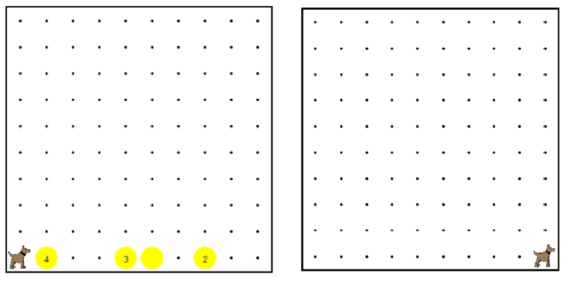

This is an example that we did in the video.
You are encouraged to play around with it, to see how it all works.
When you are done, click the arrow to go to the next problem.
這是我們在視頻中做了一個榜樣。我們鼓勵你玩它，看看它是如何工作的。當你完成後，單擊箭頭進入下一個問題。

/* This program has karel move across first street, and 這個程序有卡雷爾移動跨越第一條街道，並
* if he encounters a stack of tennis balls, he picks them 如果他遇到一個堆棧網球的，他拿起他們
* all up, and then spins around. This is the code we 結束了在視頻，但如果你仔細
* ended up with in the video, but if you take a close 結束了在視頻，但如果你仔細
* look, you will see that there is a repeated section 看看，你會看到有一個重複的部分
* of code. Could you make that its own function? */ 的代碼。你可以把它自己的功能？
function start(){ 函數的開始(){
while(frontIsClear()){ 而（前面是明確的()){
cleanUp(); 淨化();
move(); 移動();
}
cleanUp(); 淨化();
}
/* This function has karel dance, or spin around 這個函數有卡雷爾舞蹈，或左右旋轉
* by turning left four times. */ 由左轉四倍。
function dance(){ 功能舞（））{
for(var i = 0; i < 4; i++){ 對於（可變 i = 0; i < 4; i++){
turnLeft(); 頁轉到左();
}
}
function cleanUp(){ 清理功能(){
if(ballsPresent()){ 如果（球存在）
while(ballsPresent()){ 而（球存在（））{
takeBall(); 取球();
}
dance(); 舞蹈（）;
}
}